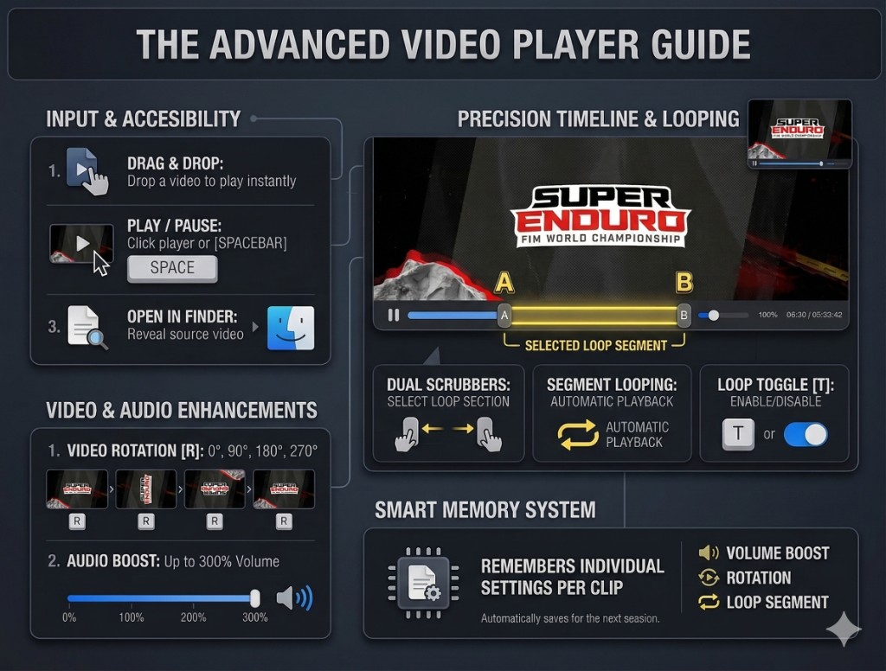
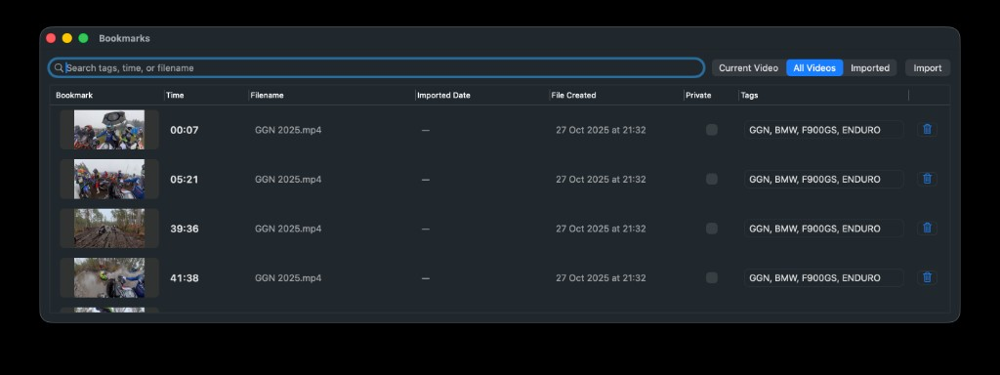

An organized library of moments, not a pile of timestamps
The bookmark manager turns saved moments into something you can actually work with: searchable, sortable, previewable, and ready to grow with your footage library.
Feature overview
QuickPreview is built for people who need to move through clips quickly, keep the important moments organized, return to the same context later, and protect anything that should stay private.
Three pillars
Everything else in QuickPreview supports one of these core jobs: staying organized, staying in context, and staying in control.
The bookmark manager turns saved moments into something you can actually work with: searchable, sortable, previewable, and ready to grow with your footage library.
QuickPreview stores clip-specific review state so the second session feels like a continuation, not a reset.
Protected access starts with macOS authentication and can add a second password layer when you want a stronger barrier.
Review workflow
The player stays lean, but the control layer is serious. It is designed for repeat viewing, timing work, and fast navigation without dragging you into editor-style overhead.

The interface stays compact while still giving you the control needed for close inspection.
Open clips from the standard file picker, drag and drop them straight in, use the current Finder selection, or keep the optional background shortcut enabled so QuickPreview is always one move away.
QuickPreview supports immediate play and pause, responsive scrubbing, 0.1 second fine seek, 1.0 second coarse seek, and frame stepping when you need to inspect a specific instant with confidence.
Toggle full-clip looping, set a start point and end point for a tighter replay window, and clear the selection just as quickly when you are ready to move on.
With a clip already open, Finder-aware switching lets a newly selected file take over playback, and Esc closes the current preview window the moment you are finished.
Bookmark manager
This is not a token bookmark list. It is a working browser for references you expect to revisit, compare, and organize over time.

Searchable columns, thumbnail previews, scoped views, and import tools all live in one place.
Each bookmark preserves the moment you cared about, then turns it into something recognizable at a glance instead of a vague timecode you have to interpret later.
Import from the dedicated button or drag files straight into the bookmark manager when you want your references gathered in one working surface.
Large, high-detail frame previews help you judge composition, clarity, and micro-details before you jump back into playback.
Search across filenames, timestamps, and tags so growing libraries stay usable instead of turning into archaeology.
Sort bookmarks by time, filename, imported date, or file-created date depending on whether you are retracing a clip, reviewing a batch, or scanning new material.
Group bookmarks with custom tags and switch between Current Video, All Videos, and Imported views so the manager stays useful at every scale.
Remembered clip state
QuickPreview keeps clip-specific state so repeat sessions start where you left them, with the same practical context already in place.
Reopen a clip and land back at the position you were working from instead of hunting for the same section again.
QuickPreview remembers where the clip lived on your display and how large the window was, which keeps multi-clip review setups feeling consistent.
Time range, loop preference, rotation, volume boost, and other clip-level adjustments can come back with the file, so your viewing context is not lost between sessions.
Privacy
When clips or bookmarks are sensitive, QuickPreview gives them a real barrier while keeping the rest of the workflow lightweight.
Sensitive references can stay out of sight during normal use, which helps keep private material from surfacing at the wrong moment.
Unlocking protected material begins with the authentication layer already built into your Mac, giving private access a familiar and trustworthy first step.
When you want stronger separation, paranoid mode requires an extra password after macOS authentication before protected bookmarks appear.
QuickPreview does not require an account, does not upload your videos, and keeps bookmarks plus clip state on your own device.
Start with the 30-day free trial, then keep QuickPreview around as the fast review tool you actually open every day.